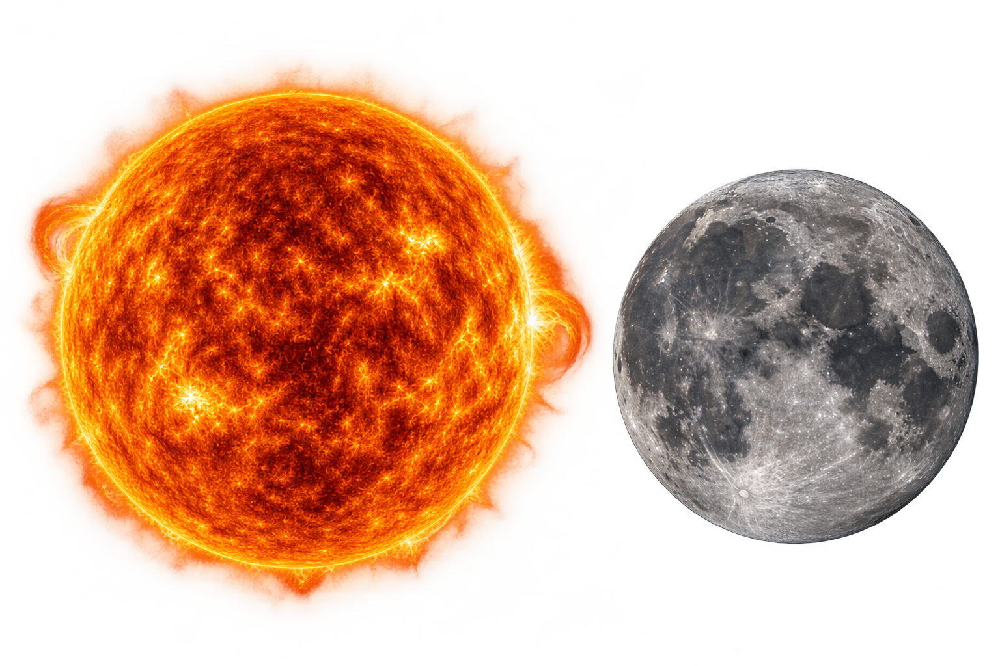

Culturas antiguas
Egipcios, mayas y aztecas veneraban al Sol como deidad y usaban la Luna para medir el tiempo y planear las cosechas.
Una danza que da vida
Desde tiempos antiguos, el Sol y la Luna han sido símbolos de equilibrio, poder y misterio. En muchas culturas, se cree que son dos fuerzas opuestas que se complementan: el Sol representa la vida, la energía y la luz; la Luna, el descanso, la intuición y el misterio.
"Aunque nunca se toquen, siempre están en el mismo cielo."

Egipcios, mayas y aztecas veneraban al Sol como deidad y usaban la Luna para medir el tiempo y planear las cosechas.
Galileo Galilei apunta su telescopio a la Luna y observa montañas y cráteres, cambiando la forma de ver el cielo.
La misión Apolo 11 lleva a los primeros seres humanos a caminar sobre la superficie lunar.
Sondas y telescopios estudian al Sol de cerca, y nuevas misiones preparan el regreso de personas a la Luna.